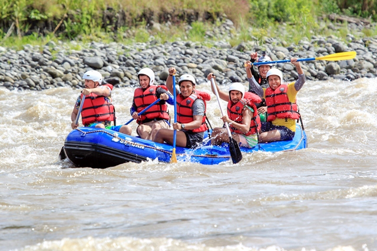
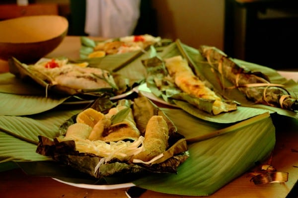

AMAZONÍA ECUATORIANA
Cada 12 de febrero, en Ecuador rendimos homenaje a la región más grande y natural de nuestro país: la Amazonía. Este paraíso verde nos invita a descubrir un mundo de diversidad infinita, partiendo desde sus habitantes –integrantes de pueblos indígenas ancestrales–, pasando por su rica flora, fauna, ríos, paisajes, gastronomía y variedad de actividades para realizar. Desde 1944, el 12 de febrero fue declarado como el Día de la Amazonía ecuatoriana, debido a que, en el mismo día, del año 1542 se dio el descubrimiento del Río Amazonas, considerado el más largo y caudaloso del mundo. Actualmente, esta región está conformada por seis provincias (Sucumbíos, Orellana, Napo, Pastaza, Morona Santiago y Zamora Chinchipe), cada una de ellas con diferentes cualidades y atractivos turísticos, ideales para vivir experiencias auténticas y reconectarse con la naturaleza.
Lugares Turísticos
Los extensos bosques, los grandes ríos, las hermosas cascadas y los largos senderos se convierten en recursos ideales para practicar turismo de aventura. En la provincia de Napo, en compañía de guías especializados es posible dejar fluir la adrenalina a través de la práctica de kakay y rafting en los ríos Quijos, Cosanga, Hollín, Jondachi, Jatunyacu, Misahuallí, que cuentan con niveles para principiantes y expertos. Los costos varían según el tour que se contrate, va desde los $60,00 por persona, por día. Asimismo, se puede realizar senderismo, paseo en canoa en los ríos lagunas que cuentan con facilidades para disfrutar de las frescas aguas. Uno de los sitios ideales para conectarse con la naturaleza mientras se realiza un paseo en canoa es la Laguna Taracoa, administrado por el Centro de Turismo Comunitario Ila Kucha, en Orellana. El costo aproximado es de $5,00 por persona.

Parque Nacional Yasuní
El Parque Nacional Yasuní es uno de los lugares más biodiversos de la tierra, en donde los amantes de la aventura tendrán contacto directo con la naturaleza en su máximo esplendor, es el área protegida más grande del Ecuador continental, es un lugar muy .

Misahualli
Misahuallí, en la provincia de Napo, cantón Tena, es un destino para recorrer bosques, ríos y cascadas que te harán enamorar de la Amazonía ecuatoriana. Además, mediante los Centros de Turismo Comunitario (CTC) se conocerá las tradiciones de pueblos milenarios .

Reserva de produccion Faunística Cuyabeno
El área protegida toma el nombre del río Cuyabeno, que en su curso medio se desborda originando un complejo de 14 lagunas y formando el humedal más extenso de la Amazonía ecuatoriana.

Gastronomía
Por la conservación de sus saberes ancestrales, la gastronomía amazónica es una de las menos intervenidas de Latinoamérica. En sus destinos es posible encontrarse con exquisitas y exóticas preparaciones como los pinchos de gusanos (mayores), los destacados maitos de pescado o ricas bebidas como la chicha de chonta, yuca o guayusa. Según el Mapa Gastronómica del país, en las provincias amazónicas se destacan otros platos como: casabe de yuca y sinchicara, en Sucumbíos; uchumanka y jugo de cocona, en Orellana; maito de filete de pescado y té de guayusa, en Napo; maito de pescado y té de guayusa, en Pastaza; ayampaco y chuchuguaso, en Morona Santiago; y caldo de corroncho y licor siete pingas, en Zamora Chinchipe. Los platos típicos se pueden degustar desde los $5,00.

Ayampaco
Uno de los ingredientes principales del ayampaco es la hoja de bijao, se lo puede preparae con diferentes carnes bien sazonadas, entre ellas estápescado, chancho y pollo . Su preparación no es complicada.
Chontacuros
También conocido como mayón. es un gusano que crece en la palma de chonta, son usados para remedios caseros para problemas respiratorias y desnutrición. Se los puede degustar crudos, asados a la plancha, en maito,etc.
Guanta
Los platos de guanta son muy nutritivos, además de deliciosos; este muy fácil de preparar y podría decirse que es un plato emblemático del oriente ecuatoriano. La carne suele usarse en seco, ahumada, caldo, guisado, etc.
Culturas
En la región habitan 10 nacionalidades y pueblos indígenas distribuidos entre las 6 provincias, cada uno con diferentes costumbres ancestrales, que mediante los emprendimientos y Centros de Turismo Comunitario comparten con los visitantes. En la actualidad, muchos de estos pueblos mantienen prácticas como la recolección de frutos, pesca, caza, danza, shamanismo, gastronomía y medicina natural. Los costos para presenciar estas experiencias varían según la provincia, la nacionalidad y actividades que se practiquen. En El Coca, se puede visitar emprendimientos turísticos por un valor que va desde los $25,00 por persona, en grupos mínimos de 6 personas.

El pueblo cofán
El Pueblo y Nacionalidad Indígena Cofan está ubicado en la frontera entre Colombia y Ecuador, distribuido en una decena de comunidades que comparten el idioma cofán. En el Ecuador la población cofán se estima en 1200 habitantes distribuidos en las comunidades Duvino, Sinangüé, Dureno, Zábalo y Chandia N'aen.
Misahualli
Misahuallí, en la provincia de Napo, cantón Tena, es un destino para recorrer bosques, ríos y cascadas que te harán enamorar de la Amazonía ecuatoriana. Además, mediante los Centros de Turismo Comunitario (CTC) se conocerá las tradiciones de pueblos milenarios .
Cultura Shuar
La cultura Shuar es un pueblo conocido tradicionalmente como una etnia de guerreros que resistieron durante la llegada de los incas y la conquista de los españoles, no doblegaron y en la actualidad se encuentran ubicados en diferentes provincias del territorio ecuatoriano.